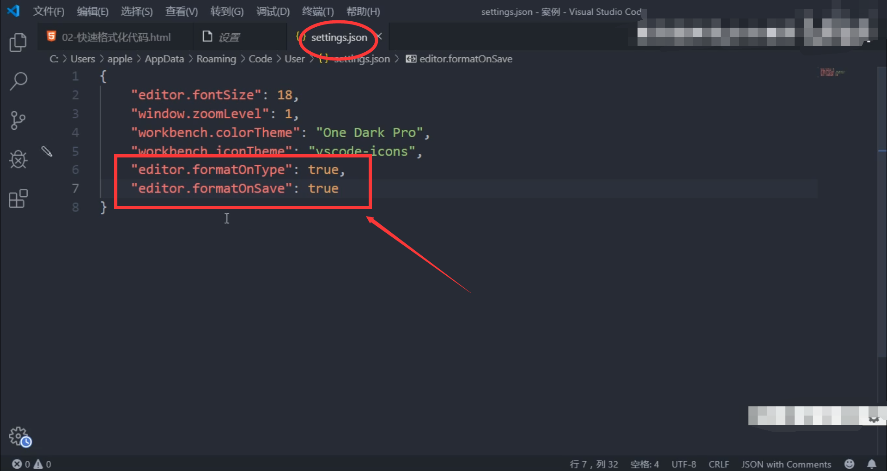

快速格式化代码
Vscode 快速格式化代码：shift + alt+ f
也可以设置 当我们 保存页面的时候自动格式化代码：
【文件】---->【首页项】----【设置】
搜索emmet.include
在settings.json下的【用户】中添加以下语句： "editor.formatOnType":true, "editor.formatOnSave":true 只需要设置一次即可，以后都可以自动保存格式化代码
第一步：
第二步：
第三步：

返回标题